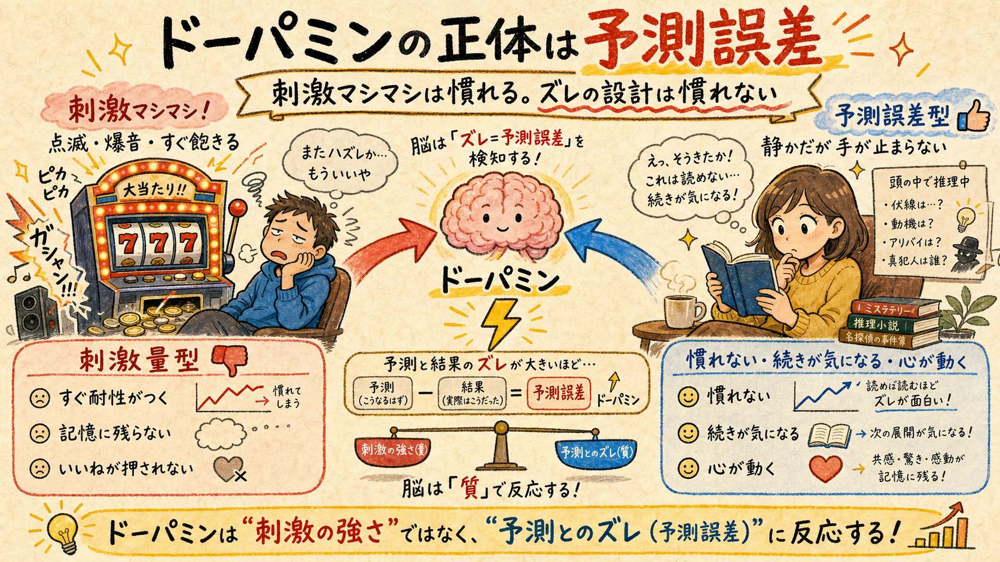
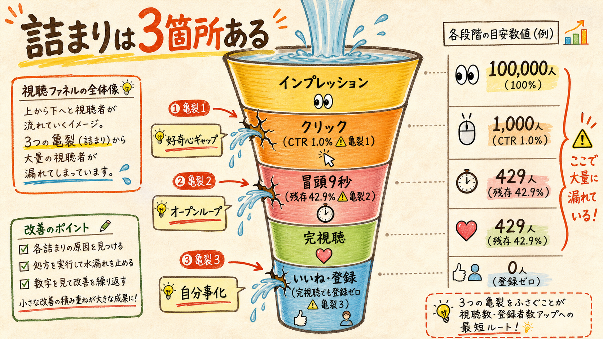
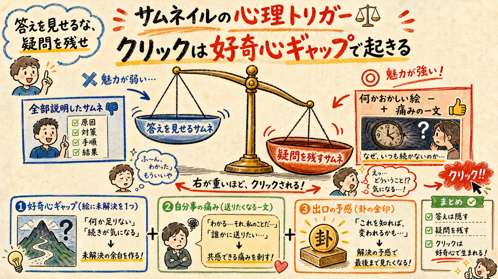
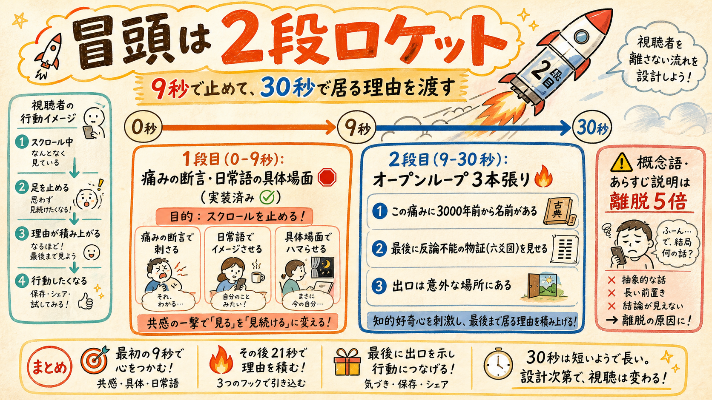
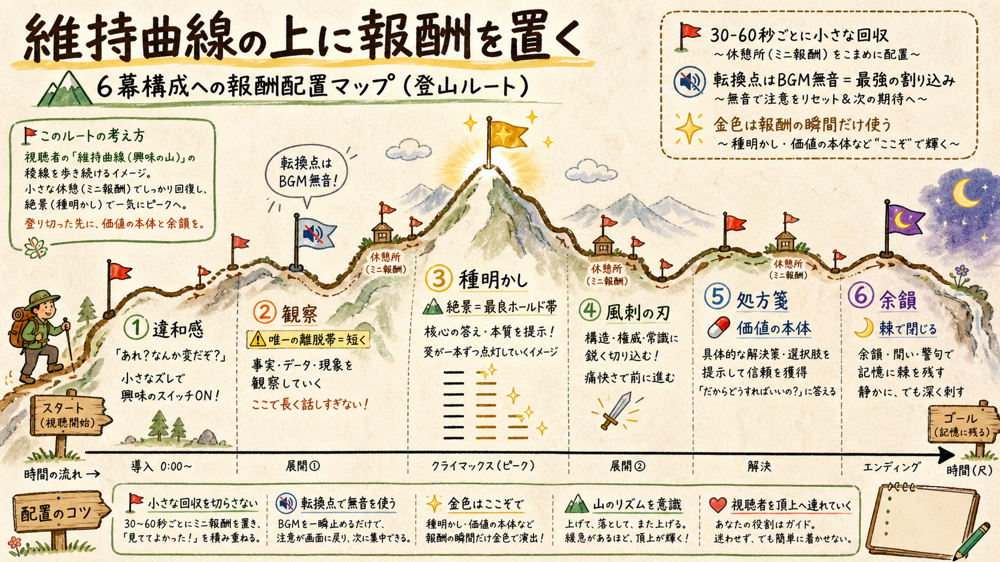
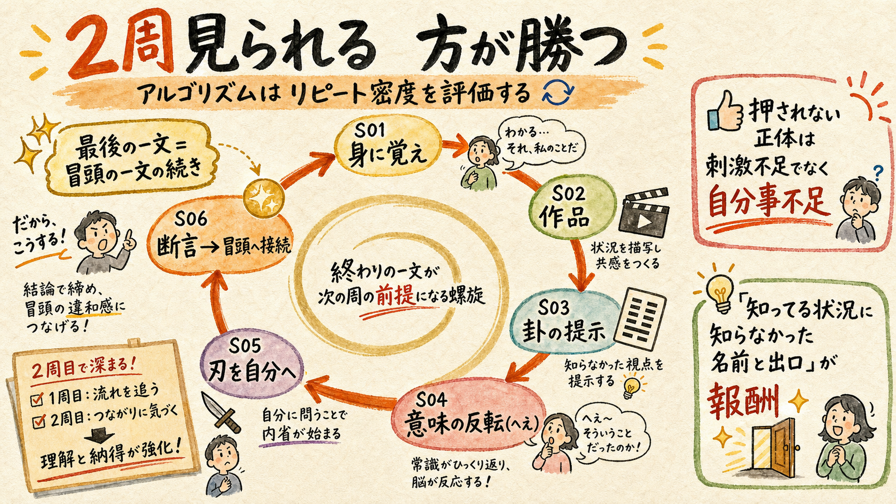

サムネから台本・演出・音・ビジュアル・ショートまで、全成果物を「報酬予測誤差の配置」で総点検した。先に結論: 刺激量を増やす方向は2025-26のデータでは負け筋で、MrBeast本人がそれを捨てて伸びた。当チャンネルの一次データ（冒頭9秒離脱・完視聴でも登録ゼロ）も同じ答えを指している。
ドーパミンは報酬そのものではなく、予測誤差で発火する学習信号

「ドパガキ向けに刺激を盛る」という直感には、神経科学的に落とし穴がある。ドーパミンは報酬を受け取った瞬間ではなく、予測と現実がズレた瞬間に発火する学習信号だ。だから同じ刺激を繰り返すと予測が追いつき、発火しなくなる（耐性）。点滅と爆音のスロット型編集が2-3年で効かなくなったのはこのためで、その象徴が MrBeast 本人の方針転換になる。
2025年のYouTubeではスローな編集・ワイド画角・ドキュメンタリー型がTV視聴と相性が良く伸びた（Lemonlight・取得2026-07-31）。一方で短尺の過剰刺激「sludge型」は視聴時間を稼いでも記憶保持と注意を損ない、いいね率に請求書が来ることが査読研究でも示されている（Scientific American / SAGE 2026）。
この資料の前提: ドパガキに見られる = 予測誤差の発生「密度」を上げること。刺激の「振幅」を上げることではない。当チャンネルの実測（具体場面の断言は概念語の5倍持つ / 完視聴96-98%の2本でも登録ゼロ）は、この理論と完全に一致している。
どこでドーパミンが切れているかを一次データで特定する

| 詰まり | 一次データ | 担当する報酬メカニズム | 処方の方向 |
|---|---|---|---|
| ① クリックされない | 本編CTR中央値 1.0%（健全4-6%）。ただしA/B H-CTR-1=no_lift（bottleneck.json / funnel.json） | 好奇心ギャップ（情報の欠落が生む緊張） | §03 サムネ・タイトル |
| ② 冒頭9秒で離脱 | biggestDrop中央値9秒・21/21本が20秒以内・30秒残存42.9%（bottleneck.json rank3） | オープンループ（未完了課題の緊張） | §04 冒頭設計 |
| ③ 見ても心が動かない | 完視聴96-98%の2本で登録ゼロ・シェア率0.015%・ショートのいいね+シェア0.3-2%台で合格線6%に全面fail（bottleneck.json / shorts-funnel.json） | 自己関連づけ（「これは自分の話だ」の報酬） | §05 本編・§06 ショート |
重要なのは、律速台帳が①でなく③を rank1 に置いていることだ。心が動いた人が登録する確率は本編15.1%/ショート11.9%でほぼ同じ＝導線は詰まっていない。心が動く人の絶対数が少ないのが第一律速で、②がそれに次ぐ。①のCTRはA/Bで持ち上がらなかった実績があり監視降格済み。つまり「ドーパミン設計」の主戦場は②と③になる。
捨てるべき直感: 「もっと派手にすれば見られる」。冒頭の実測では、具体場面の断言=離脱37%/分に対し、概念語の引用や「衝撃」等の報道語=182〜194%/分（retention-lessons RL-1〜3）。派手な言葉ほど視聴者は逃げている。
顔が使えない制約の中で、好奇心ギャップと視覚的疑問を最大化する

CTRを動かす三大トリガーは ①好奇心ギャップ ②表情のある顔（+20%級とされる業界値）③驚き。当チャンネルは法務方針で顔が描けないため、②は構造的に使えない。だからこそ残る2つを絵と文に分担させる設計が要る。現行のTier A/洞察型サムネは「意味の立つ文＋作品名タグ＋卦バッジ」で文の側は完成度が高い。弱いのは絵の側の「未解決」だ。
| 提案 | 内容 | ドーパミン上の狙い |
|---|---|---|
| 視覚的疑問を1点仕込む | サムネの絵に「何かおかしい」を1つだけ入れる。例: 六爻図の一本だけが欠けている/赤い、傘の内側だけ雨が降っている、階段が下りなのに登っている後ろ姿 | 絵が問いを出し、文が痛みを刺す分業。答えは動画の種明かしまで渡さない＝クリックがループの開始点になる |
| 題字は痛み文の「前半」だけ | 「限界の人ほど、ちゃんとして見える。」→ サムネは「限界の人ほど、」で切る等、文の完結をタイトル側に譲る | 好奇心ギャップ。ただしH58タイトルとの重複を避ける分担設計が必要 |
| ネガ煽りはやらない | 「〜の末路」「ヤバい」系は初速CTRが出ても信頼を削る（1of10・取得2026-07-31）。釣り禁止の現行方針を維持 | ネガ感情の初速は耐性が早い。痛み＝自分事のネガはOK、他人事の恐怖煽りはNGという線引き |
※ 注意: CTRのA/Bは過去にno_lift（H-CTR-1）で、5本コホートの検出力は+76%以上の効果しか拾えない。ここへの投資は「H60改題（判定8/12）と同時に相乗りで試す」に留め、単独の主戦場にはしない。
最大離脱点（中央値9秒）を、痛みの断言＋物証の予告で通過させる

平均的なYouTube動画は冒頭30秒で30-40%を失う（miraflow・取得2026-07-31）。当チャンネルは30秒残存42.9%で、実は平均よりやや良い。だが21/21本の最大離脱が20秒以内に集中しており、ここが維持曲線全体の天井を決めている。H58の「痛みの断言」は1段目（0-9秒＝スクロールを止めるブレーキ）として正しく機能する設計だ。足りないのは2段目（9-30秒＝最後まで居る理由）で、これがオープンループの多重張りになる。
| ループ | 台本上の形（例） | 回収位置 |
|---|---|---|
| ループA: 名前の予告 | 「この痛みには、3000年前から名前がついています」— まだ卦名は言わない | 幕3 種明かし |
| ループB: 物証の予告 | 「最後に、反論できない証拠を一枚だけ見せます」— 六爻図の存在だけ予告する | 幕3後半〜幕4（六爻図の全点灯） |
| ループC: 出口の予告 | 「そして出口は、頑張る方向にはありません」— 処方箋の逆説だけ先出し | 幕5 処方箋 |
3本のループはすべて断言形で張れるため、AI臭ルール（問いかけ・定型CTA禁止）と衝突しない。また「結果の一瞬だけ先出しして巻き戻す」コールドオープン型（例: 六爻図の完成形を0.5秒だけ見せてから日常場面へ落とす）は、種明かし＝最良ホールド帯という実測を入口に転用する手として別途A/B候補になる。H52 promise overlay（判定不能で継続中）はループBの視覚版として統合できる。
守るべき既存教訓: ループを張る文自体が概念語に寄ると本末転倒（RL-1: 概念語は離脱5倍）。3本とも「日常語＋名詞の具体」で書く。あらすじ説明・作品解説をループの代わりに置かない（RL-3: あらすじ列挙は周囲の約4倍離脱）。
維持曲線の上に、30-60秒ごとのミニ報酬と転換点の無音を置く

幕配分v2.3は既にデータ駆動で、離脱帯（観察）を圧縮し報酬帯（種明かし・処方箋）を守っている。次の一手は幕の「中」に報酬を刻むことだ。研究側の知見は一貫して「カット頻度ではなく情報レイヤリング＝1シーン1新概念で切る」が20分級の動画で維持50%超を出すと言う（increditors・取得2026-07-31）。具体案を成果物別に挙げる。
| 成果物 | 提案 | ドーパミン上の狙い |
|---|---|---|
| ビジュアル（進行感） | 六爻図プログレス演出: 話の進行に合わせて爻が一本ずつ点灯し、幕4で全点灯＝物証完成。画面隅に小さく常駐でも良い | チャプター報酬＋「今どこまで来たか」の進行感。Johnny Harris型の視覚アンカーを、決定論描画（幻覚ゼロ・AI画像枠消費ゼロ）の既存GUA6資産で実装できる |
| 音（パターン割り込み） | 転換点のBGM無音化: 種明かしの直前1-2秒、BGMを完全に止める。SEは足さない | 無音は「落ち着いたBGM」規約と両立する最強の予測誤差。等間隔・一定音量＝予測誤差ゼロがAI臭の正体。既存bgmVolumeEnvelope（edit_rhythm.mjs）の拡張で実装可能 |
| ビジュアル（色の条件づけ） | 金＝報酬色の運用規則化: 藍と墨で流れる日常場面には金を使わず、種明かし・六爻図・処方箋のキーワードにだけ金の差し色を出す | 「金が出た＝分かる瞬間が来た」の条件づけ。既存の配色規約（藍墨＋金）に運用ルールを1行足すだけで、視聴のたびに強化される |
| 台本（ミニ報酬） | 30-60秒ごとに小さな回収を1つ置く: 卦の一字の意味、爻の一本、観察場面の伏線の名指し回収。「1シーン1新情報」を採点軸に追加 | 維持曲線の平坦化。大きな種明かし1回に依存せず、予測誤差をマイクロドーズで配る |
| 台本（回収の明示） | 幕1の生活場面3つを、幕4/5で名指しで回収する（「さっきの、日報を開いたまま固まっていた人」） | 伏線回収は張った本数×回収の明示度で効く。goldが暗黙にやっている構造をルール化して全話に載せる |
| テロップ | 強調（金罫・サイズ変化）は種明かしと処方箋のキーワードに限定。日常場面では動かさない | 強調のインフレ防止。全部強調＝何も強調していない＝予測誤差ゼロ |
幕2（観察）の離脱帯対策の追加案: 唯一の大量離脱帯である観察パートにこそループの「中間利払い」を置く。作品の場面を1つ見せるごとに、冒頭の痛みへ一文で返す（「これ、月曜の朝のあれと同じ形です」）。作品解説が続くと離脱する実測（RL-3）への対処と、ループ維持を同時にやる。
見られるのに押されない（SG3全面fail）の正体は、刺激不足ではなく自分事不足

ショートの一次データは冒頭3秒維持（SG1）ほぼ全本passに対し、いいね+シェア（SG3）が全本0.3-2%台で合格線6%に届かない。「見られるが押されない」。ここに刺激を足しても解決しないことは、切り抜き時代の実測（いいね率0.31% vs 本編3.98%）が既に証明している。方向は2つ。
| 提案 | 内容 | ドーパミン上の狙い |
|---|---|---|
| ループの「文字通り」接続 | S06の最後の一文を、S01の冒頭の一文の直前の文になるよう書く（概念接続→文接続へ強化）。例: S06「…だから、頑張るほど沈む人がいる。」→S01「朝、ちゃんとしなきゃと思った瞬間に疲れてる。」が滑らかに2周目に入る | シームレスループでAVD100%超・リピート密度を稼ぐ（Digital Blacksmiths / Shortimize・取得2026-07-31）。現行S06ループ設計の強度を1段上げる |
| 「知ってる状況×知らない名前×出口」の徹底 | 2026-07-31の本人却下がそのまま設計原理: 知らないもの同士のランキングに順位の興味はない。報酬=「自分が知ってる状況に、知らなかった名前と出口があった」。4型すべてのS01をこの検算にかける | いいねは「うまい」では押されず「これ、自分の話だ」で押される（既存rejections教訓）。SG3の詰まりの直接処方 |
| 高速テンポ型（sh50）は1周で取り切れない密度に | カット2秒・間ゼロのsh50型は、情報を1周で全部取れない密度にあえて盛る＝「もう1周見る理由」を作る | リピート密度への貢献。ただし過剰刺激の請求書（いいね率低下）が出たら即撤退＝H51いいね率主指標がそのまま安全弁になる |
| 二択診断型（sh47）の分類報酬 | 「あなたはどっち」の分類自体が自己関連づけ報酬。診断結果それぞれに出口（卦の一手）を必ず付ける | コメントbait禁止の内側で関与を作る現行設計の維持・強化。H61判定（8/28）で型別に検証中 |
やらないこと: コメント誘発の問いかけ・終盤CTAカード・再生数での判定。すべて既存規約どおり。ショートの主指標はいいね率（H51）を維持し、「刺激を盛って再生が伸びたがいいね率が下がった」は失敗と判定する。
本人の美意識と衝突しない7つの実験を、優先順位つきで提案する
まず衝突の裁定から。「ドパガキ対応」と聞くと美意識ルールが邪魔に見えるが、実際は逆で、2025-26の実証トレンド（低刺激×高密度ナラティブ）はこのチャンネルの規約とほぼ同型だ。
| 既存ルール | 裁定 | 理由 |
|---|---|---|
| AI臭排除・定型CTA禁止・問いかけbait禁止 | 守る | 予測可能な定型＝予測誤差ゼロ。ルール自体がドーパミン設計 |
| 棘で閉じる（要約で閉じない） | 守る | 反論可能な断言は視聴後も緊張が残る＝余韻のオープンループ |
| 落ち着いたBGM・SEなし | 守る＋拡張 | 静かなベースラインがあるから「無音」が武器になる。派手なBGMのチャンネルは無音を使えない |
| 顔を描かない浮世絵・キャラ非識別 | 守る（法務） | 顔+20%は使えないが、視覚的疑問と金の条件づけで代替する（§03/§05） |
| 釣りタイトル・誇張・ネタバレ禁止 | 守る | ネガ煽りの初速は耐性が早く、信頼の損失が回復しない |
その上で、実験候補7本。すべて「本人承認→measures.mjs登録→coord.sh next-hで仮説採番→判定日設定」の手続きで走らせる想定。
| # | 実験 | 対象成果物 | 実装コスト | 期待効果 | 判定指標 |
|---|---|---|---|---|---|
| 1 | 冒頭オープンループ3本張り（名前・物証・出口の断言予告） | 台本（幕1） | 低（台本規則のみ） | 高 | 30秒残存42.9%→50%・60秒残存（H63と併走） |
| 2 | 六爻図プログレス演出（爻の点灯＝進行感） | Remotion演出 | 中（コンポジション実装） | 高 | 幕3-5の分あたり離脱率・巻き戻し発生 |
| 3 | 転換点のBGM無音化（種明かし直前1-2秒） | 音（mix） | 低（エンベロープ拡張） | 中 | 種明かし帯のホールド・巻き戻し |
| 4 | 金＝報酬色の運用規則（日常場面は藍墨のみ） | ビジュアル規約 | 低（visual_plan規則1行） | 中 | 単独判定不能＝#2と束で判定 |
| 5 | ショートS06→S01の文字通りループ接続 | ショート台本 | 低（S06規則強化） | 高 | AVD/平均視聴率100%超の本数・いいね率 |
| 6 | サムネの視覚的疑問1点（六爻図の欠け等） | サムネ | 低（H60改題に相乗り） | 低〜不明 | H60プールCTR（判定8/12）に混載 |
| 7 | コールドオープンA/B（六爻図完成形を0.5秒先出し） | 台本＋演出 | 中 | 中 | 冒頭9秒残存のコホート比較 |
推奨する着手順: #1と#5は台本規則の追記だけで次回作から適用でき、最大離脱点（冒頭）と最大詰まり（押されない）を直撃する。#2は今週の実装枠1本分。#3/#4は#2と同じエピソードに束で載せ、#6/#7は既存A/Bの枠に相乗りさせて単独コストをかけない。
※ 検出力の注意: 5本コホートで検出できるのは+76%以上の粗い効果のみ（exp-power.py）。#3/#4/#6のような小さい効果は単独判定せず、束（H58+新工程方式）で分母系指標に載せる。nullを反証として引用しない。